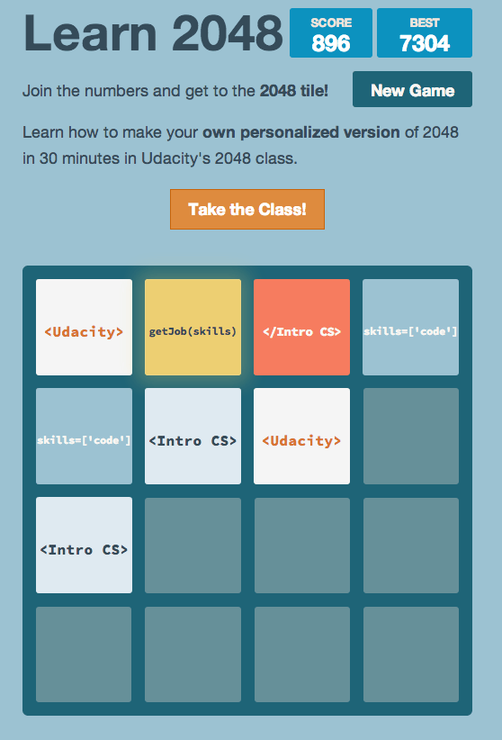
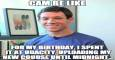

-

Build Your Own 2048!
I made my own version of 2048. How cool is that!?
-

Website Performance Optimization
Hey... this class looks familiar.
-
Website Performance Optimization
Making mobile apps isn't so hard after all.
-
 Cam's Pizzeria
Cam's Pizzeria
Who wants a performant pizza?